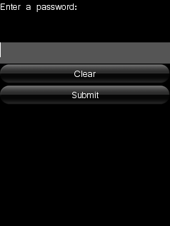
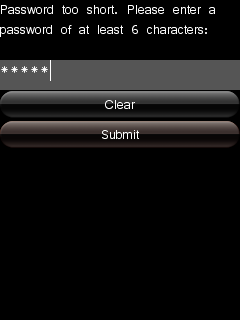

HelloMAUI is a well-commented example application for beginners. It consists of a very simple graphical user interface application that uses the MAUI library and Moblet framework. It illustrates how to create MAUI screens, and how to position and control widgets.
|  |  |
This example is included in the MoSync SDK installation in the /examples folder. For information on importing the examples into your workspace, see Importing the Examples.
When run, the user is presented with a simple MAUI screen with the following widgets:
When the user types using the keypad keys the characters are echoed in the edit box. On clicking the Submit button, the password is validated. Examine the source code of the application (in the file hellomaui.cpp) to learn how the program works. The code commenting highlights various aspects of working with MAUI screens and widgets, including:
For more advanced uses of MAUI, see our MAUIEx application example.
To understand how MAUI and the NatuveUI Widget API (an alternative GUI solution that makes use of each platform's user interface controls), compare this example application with HelloNativeUI.